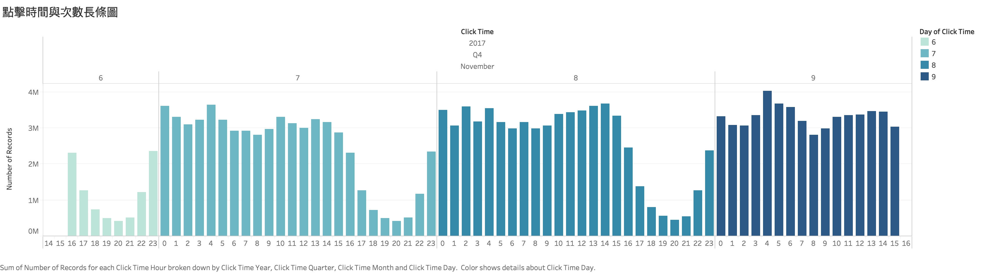

專案流程
資料來源
本組使用位於對岸北京第三方數據提供商 TalkingData 公開在 kaggle 之資料集，
此資料集包含三天內約 1.8 億筆廣告點擊行為與 App 下載行為之關係，
主要目標為預測未來事件之下載可能性，次之為透過數據分析嘗試尋找點擊詐騙之模式。


資料前處理
經由 R 以及 Python 語言進行原始資料處理，分別分為缺失值處理、資料型態處理、資料特徵縮放
1. 資料集

2. 資料品質報告
經由資料集數據品質報告表的結果可以看出，我們的train.csv訓練資料集並無缺失值。

資料探索
透過 Ｒ、Python 和 Tableau 的方式進行資料視覺化及統計分析，對資料樣貌進行更深一步的認識


機器學習
從給定的訓練資料集中找到特徵和目標，透過此訓練集學習出一個模型。訓練集中的目標是由人標註的，當新的資料到來時，可以根據這個模型預測結果
預測及分析
透過機器學習的結果可提出關於未來時間點、趨勢之預測，產出描述型分析、診斷型分析、預測型分析、指示型分析，提供面對問題的最適解法